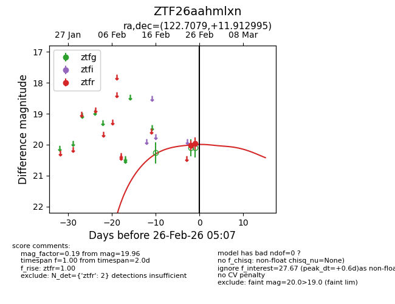
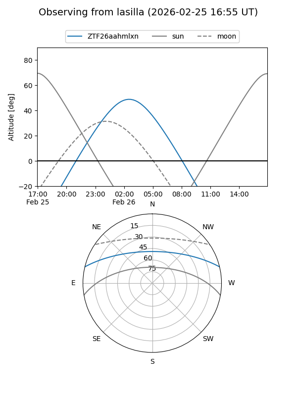
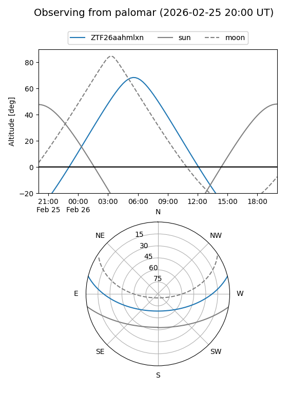
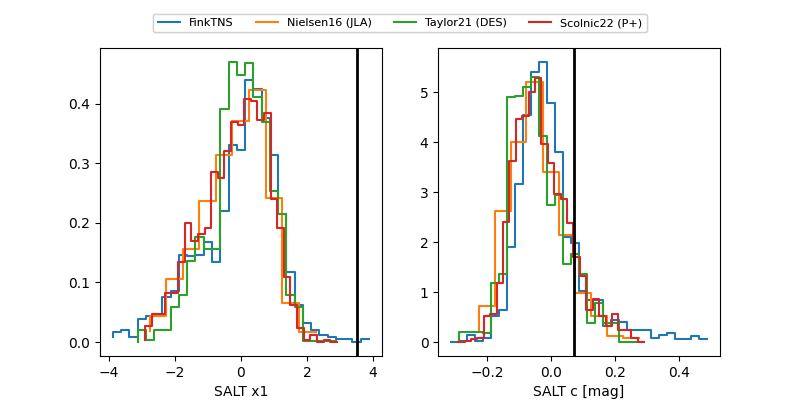

ZTF26aahmlxn
Target ZTF26aahmlxn at 2026-02-26 05:08
Aliases and brokers:
FINK: link
Lasair: link
ALeRCE: link
alt names
ZTF26aahmlxn (ztf,fink_ztf)
Coordinates:
equatorial (ra, dec) = 122.7079,+11.91299
equatorial (HMS+DMS) = 08:10:49.90,+11:54:46.78
galactic (l, b) = (210.9263,+22.94199)
Flags:
Photometry:
last ztfr=19.96
2 ztfr detections
Lightcurve

Visibility


Additional plots
